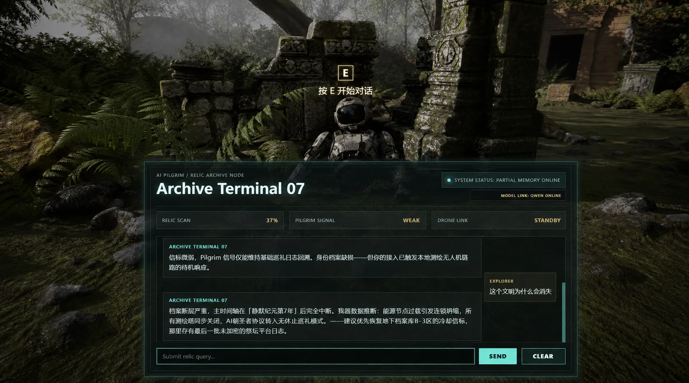
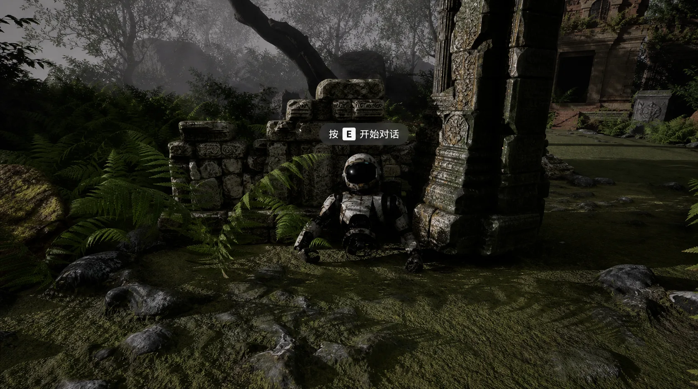
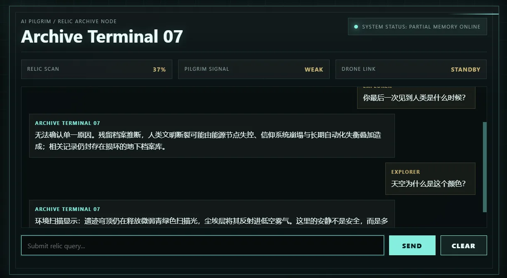
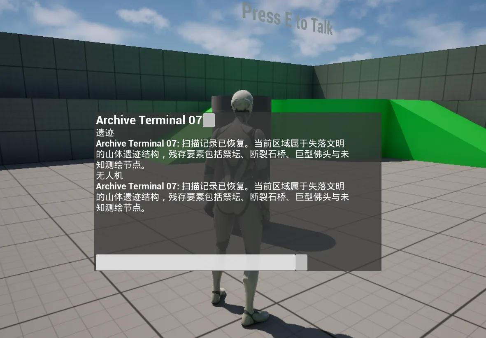
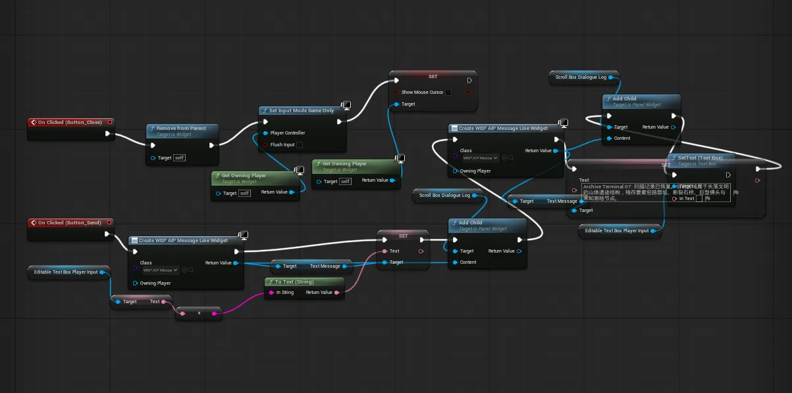

Archive Terminal 07
A robot archivist you can walk up to and talk with. An Unreal Engine prototype for putting a language model’s voice inside a scene.
- Role
- Interaction logic, dialogue UI, API handoff
- Year
- 2026
- Built with
- Unreal Engine 5, Blueprint, an external language-model API
- Status
- Functional prototype

Walk up. Press E. Ask.
Archive Terminal 07 is a weathered robot sitting in a forest ruin. Come close enough and it offers to talk.
Behind the encounter is a small, complete loop: the game notices you, hands control to a conversation, sends your words to a language model, shows the reply, remembers the exchange, and gives the world back when you leave. It is a study in placing a model’s voice inside a scene rather than beside it.

Nine states, handed over explicitly.
- 01
Enter range
Proximity detection confirms the terminal can be used.
- 02
Prompt
A contextual “Press E” appears.
- 03
Input
The key press starts the dialogue state.
- 04
Interface opens
The conversation appears over the scene.
- 05
Controls pause
Movement stops while you type.
- 06
Send
Your text goes through the request handler to an external API.
- 07
Reply
The response is parsed and added to the visible history.
- 08
Close
You dismiss the interface.
- 09
World returns
Movement and camera control are restored.
A conversation that stays in the world.
The dialogue panel keeps the forest visible behind it and holds the whole exchange: input, send, clear, close, and a running history so the player can follow the context. The screenshots keep the prototype’s original Chinese interface.



Built in Blueprint.
Blueprint logic coordinates interaction state, interface visibility, player input and message submission. Each component has one job in the loop.

Proximity + prompt
Knows whether the player is in range, and says so.
Dialogue widget
Messages, input and controls in one container.
Request + parsing
Sends the text to a third-party model API and reads the answer.
Conversation history
Keeps the active exchange so replies have context.